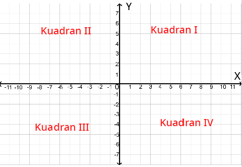
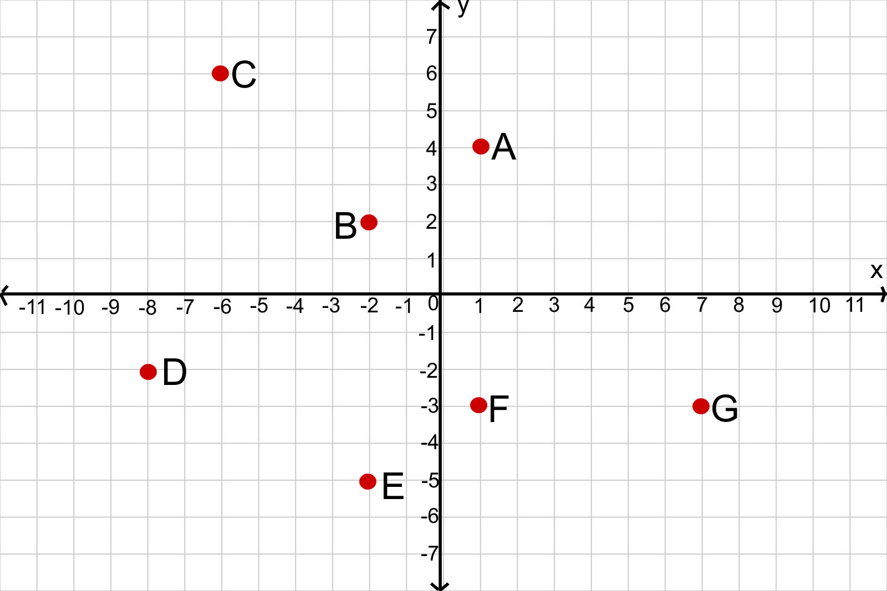

-
Tujuan Pembelajaran:
- Siswa dapat menentukan posisi tempat pada bidang koordinat
- Siswa dapat menentukan posisi titik pada bidang koordinat
- Siswa dapat menentukan bangun datar yang dibentuk dari titik koordinat
Setelah mengetahui bagaimana cara menentukan posisi tempat pada bidang koordinat, selanjutnya kita akan mempelajari bagaimana menentukan titik bidang koordinat pada bidang koordinat dengan 4 bagian kuadran.


Masalah 1.1 : Perhatikan gambar berikut ini!

Kalimantan Selatan memiliki banyak tempat wisata alam terutama di Kabupaten Tanah laut. Peta Kabupaten Tanah Laut digambarkan ke dalam bidang koordinat memiliki titik Air Terjun Bajuin, Pantai Tanbio, Pantai Takisung, Pantai Joras dan Tugu Pelaihari. Jika Tugu Pelaihari dijadikan sebagai titik awal (0,0), maka tempat wisata tersebut tersebar pada bidang koordinat seperti dibawah ini.


- Apa yang dimaksud dengan 4 bagian kuadran dalam sistem koordinat?
- Bagaimana cara menentukan posisi titik Air Terjun Bajuin, Pantai Tanbio, Pantai Takisung dan Pantai Joras pada bidang koordinat?
- Bagaimana cara penulisan titik koordinat yang tepat?

Berdasarkan gambar bidang koordinat Gambar 1.6, Tentukan
- Posisi Titik Air Terjun Bajuin pada bidang koordinat dengan penulisan titik koordinat yang tepat,
- Posisi Titik Tanbio pada bidang koordinat dengan penulisan titik koordinat yang tepat,
- Posisi Titik Takisung pada bidang koordinat dengan penulisan titik koordinat yang tepat,
- Posisi Titik Joras pada bidang koordinat dengan penulisan titik koordinat yang tepat.

Sumbu-x atau yang kita kenal sebagai sumbu medatar dan sumbu-y atau sumbu tegak membagi
bidang koordinat menjadi 4 bagian kuadran yaitu Kuadran I, Kuadran II, Kuadran III dan
Kuadran IV seperti gambar berikut ini.

Sumbu-X dan sumbu-Y membagi bidang koordinat menjadi 4 bagian kuadran, yaitu :
- Kuadran I :
- Mulai titik awal (0,0) ke arah kanan bernilai positif (Sumbu-x)
- Mulai titik awal (0,0) ke arah atas bernilai positif (Sumbu-y) - Kuadran II :
- Mulai titik awal (0,0) ke arah kiri bernilai negatif (Sumbu-x)
- Mulai titik awal (0,0) ke arah atas bernilai positif (Sumbu-y) - Kuadran III :
- Mulai titik awal (0,0) ke arah kiri bernilai negatif (Sumbu-x)
- Mulai titik awal (0,0) ke arah bawah bernilai negatif (Sumbu-y) - Kuadran IV :
- Mulai titik awal (0,0) ke arah kanan bernilai positif (Sumbu-x)
- Mulai titik awal (0,0) ke arah bawah bernilai negatif (Sumbu-y)
Posisi titik koordinat kartesius ditulis dalam pasangan berurut (x,y). Bilangan x menyatakan jarak titik itu dari sumbu-y dan bilangan y menyatakan jarak titik itu dari sumbu-x.
Berikut ini adalah contoh penulisan dengan titik koordinat A.
(contoh penulisan titik koordinat)
Mari kita simak animasi berikut ini untuk menentukan posisi titik berdasarkan 4 kuadran koordinat.
- Klik tombol mulai pada animasi dibawah ini untuk memulai.
- Klik tombol
 untuk memperbesar layar.
untuk memperbesar layar. - Jawab pertanyaan dengan masukkan jawaban pada kolom yang tersedia kemudian tekan enter

Kerjakan latihan soal berikut ini!
Jawablah pertanyaan dibawah ini berdasarkan gambar diatas dengan mengisi kolom yang kosong dibawah ini!
-
Petunjuk:
- Isikan jawaban anda pada kolom yang kosong.
- Tekan tombol cek untuk mengecek jawaban.
- Tekan tombol 1,2,3,4,5,6,7 dibawah soal atau tombol < dan > untuk mengganti ke nomor selanjutnya